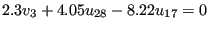

Next: *EXPANSION Up: Input deck format Previous: *END STEP Contents
Keyword type: model definition (no REMOVE parameter) and step (only for REMOVE)
With this option, a linear equation constraint between arbitrary displacement components at any nodes where these components are active can be imposed. The equation is assumed to be homogeneous, and all variables are to be written on the left hand side of the equation. The first variable is considered to be the dependent one, and is subsequently eliminated from the equation, i.e. the corresponding degree of freedom does not show up in the stiffness matrix. This reduces the size of the matrix. A degree of freedom in a node can only be used once as the dependent node in an equation or in a SPC. For CFD-applications it is important for the stability of the calculation that the coefficient of the dependent degree of freedom is as large as possible compared to the coefficients of the independent degrees of freedom. For instance, setting the radial velocity orthogonal to the z-axis to zero corresponds to a MPC linking the x- and y-component of the velocity. The component with the largest coefficient should be chosen as dependent degree of freedom.
There are two optional parameters: REMOVE and REMOVE ALL. The parameter REMOVE can be used to remove equations corresponding with selected dependent degrees of freedom. These are listed underneath the *EQUATION keyword by node number, first degree of freedom and last degree of freedom. This triggers the deletion of all equations for which the dependent degree of freedom corresponds to the range from the first to the last degree of freedom of the selected node. If the last degree of freedom was omitted, it equals the first degree of freedom.
The parameter REMOVE ALL is used to remove all equations. Notice that the latter option removes all linear and nonlinear equations, irrespective whether they were defined with a *EQUATION card, a *MPC card or whether they were generated internally. Use of the REMOVE or the REMOVE ALL parameter usually makes sense only in step 2 or higher.
First line:
Following lines in the absence of the REMOVE and REMOVE ALL parameter, in a set: First line of set:
Following lines of set (maximum 12 entries per line):
Following lines if the REMOVE parameter was selected:
Repeat this line if needed.
If the REMOVE ALL parameter was selected no additional lines are necessary.
Example: *EQUATION 3 3,2,2.3,28,1,4.05,17,1,-8.22
defines an equation of the form , where u, v and w are the displacement for degree of freedom one, two and three, respectively.
Example: *EQUATION,REMOVE 10,1,3
removes all equations for which the dependent degree of freedom corresponds to the degrees of freedom 1, 2 or 3 of node 10.
Example files: achtel2, achtel29, achtel9, achtelcas, beamnlmpc, equrem1,
equrem2, equrem3.